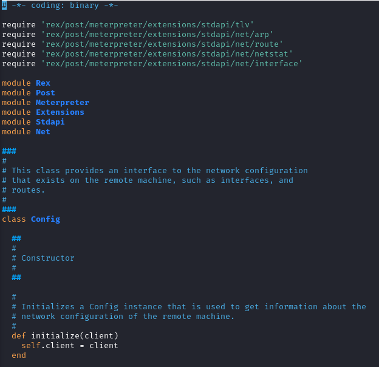
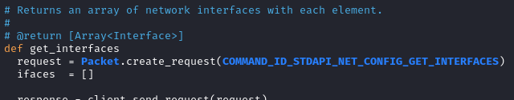
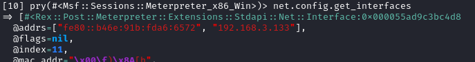
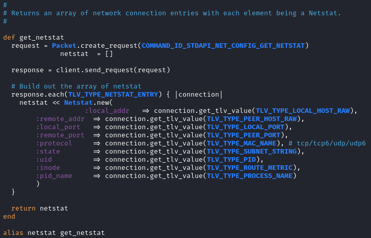
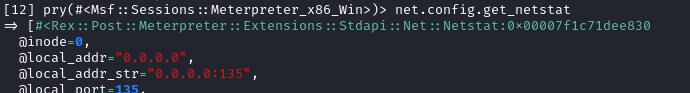

net
/usr/share/metasploit-framework/lib/rex/post/meterpreter/extensions/stdapi/net


Formatting on the meterpreter console:
/usr/share/metasploit-framework/lib/rex/post/meterpreter/ui/console/command_dispatcher/stdapi/net.rb
Config class

methods:
◇ get_interfaces

net.config.get_interfaces

each interface returned is an instance of the Interface class (/usr/share/metasploit-framework/lib/rex/post/meterpreter/extensions/stdapi/net/interface.rb)
◇ get_netstat

net.config.get_netstat
net.config.netstat #alias

each element returned is an instance of the Netstat class (/usr/share/metasploit-framework/lib/rex/post/meterpreter/extensions/stdapi/net/netstat.rb)